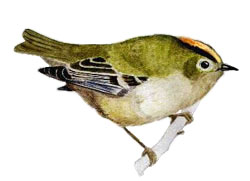

Goldcrest

Up to 6 on many dates with autumn fall of 20 in 2000, the autumn birds are not often counted.
14/04/95 - 5 singing males
05/06/98 - 6 singing males
??/05/99 - 5+ singing males.
29/10/00 - 20 birds (KGH)
14/10/02 - reported influx
29/09/03 - reported influx
04/06/09 - pair with young
22/10/10 - 10+
2011 - maximum 4 during the year
2012 - maximum 6 on 26/02
2013 - maximum 3+
2014 - nested - max 6 on 22/09
2015 - nested - max 5 on 10/02
2016 - maximum 6 on 07/11, also 5 on 14/06
2017 - maximum 2 reported on 10 dates in February and March plus one on 24/08. No others reported outside these dates
2018 - Only reported on 9 dates with max 5+ on 17/12
2019 - maximum 2 reported on just 5 dates in Febrary and March. Probably under reported from the East side which didn't get much attention this year
2020 - only 2 records with 1 on 04/02 and 2 on 30/11
2021 - No records this year!
2022 - Fortunately some seen this year with 2 singing on 11/04, a single on 04/11 and 2 on 11/11
2023 - One on 06/01. A pair in April and May with display on 03/04 and song on 25/04 and 13/05. A single seen twice in July and a pair near the hide on 11/11, 14/11 and 17/11
2024 - 19 records of 1 or 2 birds. Song heard on 03/04, but not seen or heard from May to August
2025 - 23 records of up to 3 birds at the south end. About 50% of records are of call heard only. 5 records of calls heard in May unlike last year, but none in June or first half of July